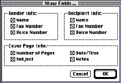

|
Movable Modal Dialog BoxesA movable modal dialog box is a modal dialog box that has a title bar that allows the user to move the dialog box. Movable modal dialog boxes are an adaptation of the modal dialog box that borrows the ability to move around the screen from the modeless dialog box. Movable modal dialog boxes suspend other actions within your application, but allow the user some flexibility. The user can switch to another application while you display a movable modal dialog box. If the user clicks another window of the current application, your application should play the system alert sound. If the user clicks a window from another application or the desktop, the windows of that application or the Finder come to the front. Figure 6-7 shows a typical movable modal dialog box.Figure 6-7 A typical movable modal dialog box  Movable modal dialog boxes typically do not include a close box, meaning that a user closes such a box by clicking a button. See the section "Button Names" on page 207 in Chapter 7, "Controls," for detailed descriptions of how to name buttons and what actions users expect from appropriately named buttons. Use a movable modal dialog box when the user may need to see the document contents that a modal dialog box obscures. For example, if the dialog box makes style changes to a selection in a document, the user may want to see the selection. If you display a modal dialog box over the selection, the user won't be able to see it. You can also use a movable modal dialog box when your application needs more information from the user, but it's not imperative to get the information before the user performs another action in another application. (Movable modal dialog boxes are still modal to the application.) Another good use of the movable modal dialog box is to display the status of an operation that takes a long time but can run in the background. This case is described in detail in the section "Movable Modal Dialog Box Behaviors," on page 186. Subtopics |